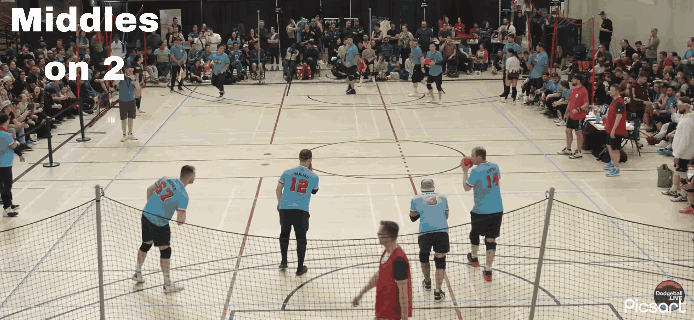
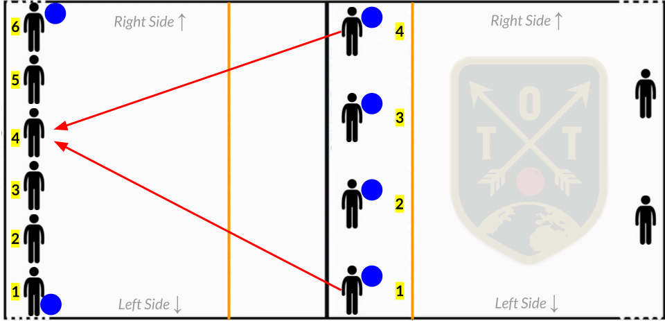
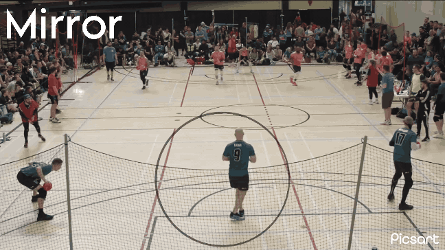

Dodging All Night, All Summer - Week 1
Team playbook · quick reference · watch the plays animate →
General Info
- During nearly all calls players who are not throwing should be pump faking.
- Corners are the players on the left and right most side of the court.
- Listen for people saying ball left or ball right and send a ball to the corresponding corner.
- If you see an opportunity for a high percentage shot when we are up players or have 3 or more balls as a counter you can rely on your best judgement.
- After a player near you throws a ball you should slightly slide in front of them and continue to apply pressure to protect them as they back pedal.
Play Calling
- For play calls we will call out targets based on a number. The person on the left side is 1, next to them is 2 and so on.
- Play calls will go -> Person/people who are throwing (see plays below) -> target (number system) described above -> number of pump fakes
- I.E. — Outsides on 2, one pump fake
- We should not be calling more than 2 pump fakes
- Daniel and Josh will typically make play calls but the middle player should make calls and count if we are out. (listen for Daniel shouting play calls from the side lol)
- Pass the play calls down to the corners if we don’t have time to huddle
Offensive Calls
- 3 balls we will meet in the middle and designate 1 or 2 throwers on a specific target
- 4 balls we will call insides or outsides on a number
- insides — two middle players
Show diagram

- outsides — both corners
Show diagram

- Kill left/Kill right — The two players on the left or right holding balls will throw at a specified target.
Defensive calls
- Home — designated player will throw from their current position at the player of their choosing. This would be a precounter meaning that you release the ball before or as the other team throws.
Show diagram

- Away — all ball holders will charge the center line and the designated player will throw at a target of their choosing (typically this should be the player who just threw).
Show diagram — Away

- Mirror — the player opposite of the opposing team member who threw has the green light to throw (almost always at the opposing player who just released the ball)
Show diagram

- Middle — If we are left with only one ball it will go to a player in the middle and their job is to bait balls by taking an offensive position. They should almost never throw that last ball.